CS50x Problem Sets
During the CS50 course, I got introduced to computer science. To better understand the basics of coding, they made us learn to program in the C language first before continuing into Python, SQL, HTML, CSS, and JavaScript.
Overview
C language
hello.c
Modify this program in such a way that it first prompts the user for their name and then prints hello, so-and-so, where so-and-so is their actual name.
#include <stdio.h>
#include <cs50.h>
int main(void)
{
// Ask user for name
string name = get_string("What's your name? ");
// Print hello + their name
// %s means insert a string where name is the selected string
printf("hello, %s\n", name);
}
Output
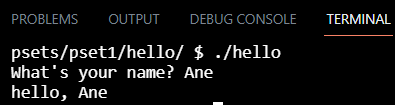mario.c
Toward the end of World 1-1 in Nintendo’s Super Mario Brothers, Mario must ascend right-aligned pyramid of blocks.
Let’s recreate that pyramid in C, albeit in text, using hashes (#) for bricks. Each hash is a bit taller than it is wide, so the pyramid itself will also be taller than it is wide.
And let’s allow the user to decide just how tall the pyramid should be by first prompting them for a positive integer between, say, 1 and 8, inclusive.
#include <stdio.h>
#include <cs50.h>
int main(void)
{
int n;
do
{
// Get the height of the pyramid from user
n = get_int("Height: ");
}
// Must be more than 1 and less than 8
while (n > 8 || n < 1);
for (int i = 1; i <= n; i++)
{
// Make the space before the blocks to make it right-aligned
for (int k = (n - i); k > 0; k--)
{
printf(" ");
}
// Make the blocks of the pyramid
for (int j = 0; j < i; j++)
{
printf("#");
}
printf("n");
}
}
Output
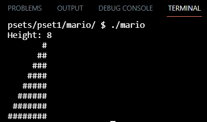marioMore.c
Toward the beginning of World 1-1 in Nintendo’s Super Mario Brothers, Mario must hop over adjacent pyramids of blocks.
Let’s recreate those pyramids in C, albeit in text, using hashes (#) for bricks. Each hash is a bit taller than it is wide, so the pyramids themselves will also be taller than they are wide.
And let’s allow the user to decide just how tall the pyramids should be by first prompting them for a positive integer between, say, 1 and 8, inclusive.
#include <stdio.h>
#include <cs50.h>
int main(void)
{
int height;
//Ask user for height
do
{
height = get_int("Height: ");
}
while (height > 8 || height < 1);
//Make the columns
for (int i = 1; i <= height; i++)
{
//Make the space in front
for (int k = (height - i); k > 0; k--)
{
printf(" ");
}
//Make the rows
for (int j = 1; j <= i; j++)
{
printf("#");
}
//Make space between the two pyramids
printf(" ");
//Make rows again
for (int j = 1; j <= i; j++)
{
printf("#");
}
printf("n");
}
}
Output
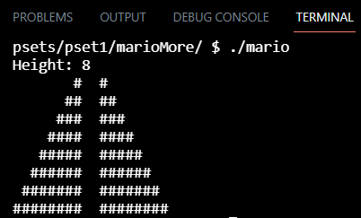cash.c
When making change, odds are you want to minimize the number of coins you’re dispensing for each customer.
Well, suppose that a cashier owes a customer some change and in that cashier’s drawer are quarters (25¢), dimes (10¢), nickels (5¢), and pennies (1¢).
The problem to be solved is to decide which coins and how many of each to hand to the customer.
#include <cs50.h>
#include <stdio.h>
int get_cents(void);
int calculate_quarters(int cents);
int calculate_dimes(int cents);
int calculate_nickels(int cents);
int calculate_pennies(int cents);
int main(void)
{
// Ask how many cents the customer is owed
int cents = get_cents();
// Calculate the number of quarters to give the customer
int quarters = calculate_quarters(cents);
cents = cents - quarters * 25;
// Calculate the number of dimes to give the customer
int dimes = calculate_dimes(cents);
cents = cents - dimes * 10;
// Calculate the number of nickels to give the customer
int nickels = calculate_nickels(cents);
cents = cents - nickels * 5;
// Calculate the number of pennies to give the customer
int pennies = calculate_pennies(cents);
cents = cents - pennies * 1;
// Sum coins
int coins = quarters + dimes + nickels + pennies;
// Print total number of coins to give the customer
printf("Total number of coins: %i\n", coins);
}
int get_cents(void)
{
// TODO
int cents = 0;
// Ask until change is more than 0
do
{
cents = get_int("Change: ");
}
while (cents < 1);
return cents;
}
int calculate_quarters(int cents)
{
// TODO
int quarters = 0;
// While there's enough cents for the coin, add one coin and remove the amount from the cents
while (cents >= 25)
{
quarters++;
cents -= 25;
}
return quarters;
}
int calculate_dimes(int cents)
{
// TODO
int dimes = 0;
// While there's enough cents for the coin, add one coin and remove the amount from the cents
while (cents >= 10)
{
dimes++;
cents -= 10;
}
return dimes;
}
int calculate_nickels(int cents)
{
// TODO
int nickels = 0;
// While there's enough cents for the coin, add one coin and remove the amount from the cents
while (cents >= 5)
{
nickels++;
cents -= 5;
}
return nickels;
}
int calculate_pennies(int cents)
{
// TODO
int pennies = 0;
// While there's enough cents for the coin, add one coin and remove the amount from the cents
while (cents >= 1)
{
pennies++;
cents -= 1;
}
return pennies;
}
Output
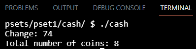credit.c
There are a lot of people with credit cards in this world, so those numbers are pretty long: American Express uses 15-digit numbers, MasterCard uses 16-digit numbers, and Visa uses 13- and 16-digit numbers.
All American Express numbers start with 34 or 37; most MasterCard numbers start with 51, 52, 53, 54, or 55 (they also have some other potential starting numbers which we won’t concern ourselves with for this problem); and all Visa numbers start with 4.
But credit card numbers also have a “checksum” built into them, a mathematical relationship between at least one number and others. That checksum enables computers (or humans who like math) to detect typos (e.g., transpositions), if not fraudulent numbers, without having to query a database, which can be slow.
Of course, a dishonest mathematician could certainly craft a fake number that nonetheless respects the mathematical constraint, so a database lookup is still necessary for more rigorous checks.
So what’s the secret formula? Well, most cards use an algorithm invented by Hans Peter Luhn of IBM. According to Luhn’s algorithm, you can determine if a credit card number is (syntactically) valid.
#include <stdio.h>
#include <cs50.h>
#include <math.h>
// MASTERCARD: 16-Digit #'s, Start with: 51, 52, 53, 54, or 55
// VISA: 13-16-Digit #'s, Start with: 4
// AMEX: 15-Digit #'s, Star with: 34 or 37
// Luhn's Algorithm:
// 1. Multiply every other digit by 2, starting with the second number to the last
// 2. Add the sum of those digits
// 3. Add the sum of the other digits
// 4. If the total sum ends with a 0, it is valid!
// Declare variables
long ccn;
long checksum = 0;
int count = 0;
void Check(void);
int main(void)
{
//-----Promt user for credit card number
do
{
ccn = get_long("Number: ");
}
while (ccn <= 0);
long CCnumber = ccn;
//-----Check length
long digits = ccn;
while (digits > 0)
{
digits /= 10;
count++;
}
//-----Check if the length is valid
if (count != 13 && count != 15 && count != 16)
{
printf("INVALIDn");
return 0;
}
//-----Calculate checksum
Check();
long csEnd = checksum % 10;
if (csEnd != 0)
{
printf("INVALIDn");
return 0;
}
//-----Find start number with two digits
long start = CCnumber;
for (int j = 0; j < count - 2; j++)
{
start /= 10;
}
//Check if it's American Express:
if (count == 15 && (start == 34 || start == 37))
{
printf("AMEXn");
}
//Check if it's MasterCard:
else if (count == 16 && (start == 51 || start == 52 || start == 53 || start == 54 || start == 55))
{
printf("MASTERCARDn");
}
//Check if it's VISA:
else if ((count == 13 || count == 16) && (start / 10 == 4))
{
printf("VISAn");
}
//INVALID
else
{
printf("INVALIDn");
}
}
void Check()
{
//Case 1 (Multiply every other digit by 2)
long long digit[count];
for (int i = 1; i <= count; i++)
{
digit[i] = ccn % 10;
//Case 1 (Multiply every other digit by 2 and add to checksum)
if (i % 2 == 0)
{
long long dd = digit[i] * 2;
if (dd >= 10)
{
checksum += dd % 10;
checksum += dd / 10;
}
else
{
checksum += digit[i] * 2;
}
}
//case 2 (add the other digits to checksum)
else
{
checksum += digit[i];
}
ccn /= 10;
}
}
Output
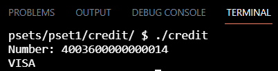 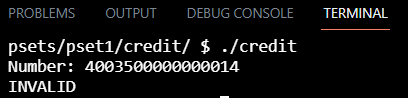readability.c
For this problem, you’ll implement a program that calculates the approximate grade level needed to comprehend some text.
A number of “readability tests” have been developed over the years that define formulas for computing the reading level of a text.
One such readability test is the Coleman-Liau index. The Coleman-Liau index of a text is designed to output that (U.S.) grade level that is needed to understand some text.
#include <cs50.h>
#include <string.h>
#include <ctype.h>
#include <stdio.h>
#include <math.h>
int main(void)
{
//Get text from user
string text = get_string("Text: ");
//Calculate length of string/text
int length = strlen(text);
//Letter count, word count, sentence count
int lcount = 0;
int wcount = 0;
int scount = 0;
for (int i = 0; i <= length; i++)
{
//Count letters
if (isalpha(text[i]))
{
lcount++;
}
//Count words
else if (isspace(text[i]))
{
wcount++;
}
//Count sentences
else if (text[i] == '.' || text[i] == '!' || text[i] == '?')
{
scount++;
}
//Count the last word
else if (text[i] == '')
{
wcount++;
}
}
//Calculate average number of letters per 100 words
float avgl = (float) lcount / wcount * 100;
//Calculate average number of sentences per 100 words
float avgs = (float) scount / wcount * 100;
//Calculate Coleman-Liau Index
int index = round(0.0588 * avgl - 0.296 * avgs - 15.8);
//If greater than grade 16
if (index > 16)
{
printf("Grade 16+n");
}
//If less than grade 1
else if (index < 1)
{
printf("Before Grade 1n");
}
//If grade is between 1 and 16
else
{
printf("Grade %in", index);
}
}
Output
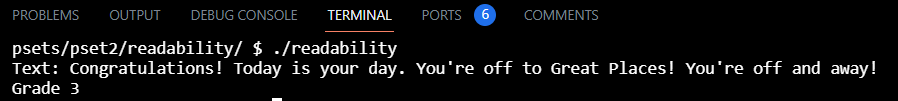 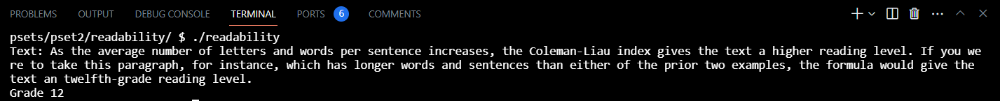caesar.c
Let’s write a program called caesar that enables you to encrypt messages using Caesar’s cipher.
At the time the user executes the program, they should decide, by providing a command-line argument, what the key should be in the secret message they’ll provide at runtime.
We shouldn’t necessarily assume that the user’s key is going to be a number; though you may assume that, if it is a number, it will be a positive integer.
#include <cs50.h>
#include <ctype.h>
#include <stdlib.h>
#include <stdio.h>
#include <string.h>
int main(int argc, string argv[])
{
//Make sure user entered the key
if (argc != 2)
{
printf("Usage: ./caesar keyn");
return 1;
}
/*the issue is that you started your code
int main( int argc, string argv[])
{ int k = atoi(argv[1];
. . . }
/// the mistakes is in the above assignment, if the there is no argv[1] so the OS will report error and terminates the program
so you have not to do k assignment to argv[1] unless you make sure there is
argv[1] */
int key = atoi(argv[1]);
// Make sure the key is a positive number
if (key <= 0)
{
printf("Usage: ./caesar keyn");
return 1;
}
//Make sure there's only digits and not letters or symbols
else
{
for (int i = 0; i < strlen(argv[1]); i++)
{
if (isdigit(argv[1][i]) == false)
{
printf("Usage: ./caesar keyn");
return 1;
}
}
}
//To check the key is correct
//printf("key: %in", key);
//Get plaintext
string plain = get_string("plaintext: ");
string cipher = plain;
printf("ciphertext: ");
//If key is 26 it means all the letters will be the same
if (key == 26)
{
printf("%sn", plain);
return 0;
}
//If the key is more than 26, the alphabet will start over where 27 equals the same as 1 (A becomes B)
else if (key > 26)
{
for (int i = 0, n = strlen(plain); i < n; i++)
{
//If it's not a letter, the symbol should remain the same
if (isalpha(plain[i]) == false)
{
cipher[i] = plain[i];
}
//If the letter is uppercase
else if (isupper(plain[i]))
{
cipher[i] = (((plain[i] + key - 65 - 26) % 26) + 65);
}
//If the letter is lowercase
else
{
cipher[i] = (((plain[i] + key - 97 - 26) % 26) + 97);
}
printf("%c", cipher[i]);
}
printf("n");
}
else if (key < 26)
{
for (int i = 0, n = strlen(plain); i < n; i++)
{
//If it's not a letter, the symbol should remain the same
if (isalpha(plain[i]) == false)
{
cipher[i] = plain[i];
}
//If the letter is uppercase
else if (isupper(plain[i]))
{
cipher[i] = (((plain[i] + key - 65) % 26) + 65);
}
//If the letter is lowercase
else
{
cipher[i] = (((plain[i] + key - 97) % 26) + 97);
}
printf("%c", cipher[i]);
}
printf("n");
}
return 0;
}
Output
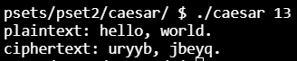substitution.c
Let’s write a program called substitution that enables you to encrypt messages using a substitution cipher.
At the time the user executes the program, they should decide, by providing a command-line argument, on what the key should be in the secret message they’ll provide at runtime.
#include <cs50.h>
#include <ctype.h>
#include <stdlib.h>
#include <stdio.h>
#include <string.h>
int main(int argc, string argv[]) //----------GET KEY----------
{
//----------VALIDATE KEY----------
//Make sure user entered the key
if (argc != 2)
{
printf("Usage: ./substitution keyn");
return 1;
}
string key = argv[1];
// Make sure the key has 26 letters
if (strlen(key) != 26)
{
printf("Key must contain 26 characters.n");
return 1;
}
//Make sure there's only letters and not digits or symbols
else
{
for (int i = 0; i < strlen(argv[1]); i++)
{
if (isalpha(argv[1][i]) == false)
{
printf("Key should only contain lettersn");
return 1;
}
}
}
// Make key to lowercase
string lowerkey = key;
for (int i = 0; i < strlen(argv[1]); i++)
{
for (int j = i + 1; j <= strlen(argv[1]); j++)
{
lowerkey[i] = tolower(key[i]);
}
}
//Check if there's a repeated character
for (int i = 0; i < strlen(argv[1]); i++)
{
for (int j = i + 1; j < strlen(argv[1]); j++)
{
if (lowerkey[i] == lowerkey[j])
{
printf("Key should not contain repeated letters.n");
return 1;
}
}
}
//----------GET PLAINTEXT----------
const string plain = get_string("plaintext: ");
//----------ENCIPHER----------
string cipher = plain;
string alpha = "abcdefghijklmnopqrstuvwxyz";
printf("ciphertext: ");
for (int i = 0, n = strlen(plain); i < n; i++)
{
//If it's not a letter, the symbol should remain the same
if (isalpha(plain[i]) == false)
{
cipher[i] = plain[i];
}
//If the letter is uppercase
else if (isupper(plain[i]))
{
int found = 1;
int j = 0;
do
{
if (plain[i] == toupper(alpha[j]))
{
cipher[i] = toupper(key[j]);
found--;
}
else if (j < strlen(alpha))
{
j++;
}
}
while (found == 1);
}
//If the letter is lowercase
else
{
int found = 1;
int j = 0;
do
{
if (plain[i] == alpha[j])
{
cipher[i] = key[j];
found--;
}
else if (j < strlen(alpha))
{
j++;
}
}
while (found == 1);
}
printf("%c", cipher[i]);
}
printf("n");
//----------PRINT CIPHERTEXT----------
//printf("ciphertext: %sn", cipher);
return 0;
}
Output
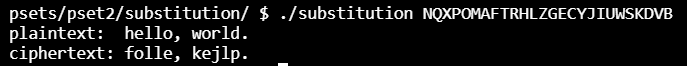plurality.c
Perhaps the simplest way to hold an election, though, is via a method commonly known as the “plurality vote” (also known as “first-past-the-post” or “winner take all”).
In the plurality vote, every voter gets to vote for one candidate. At the end of the election, whichever candidate has the greatest number of votes is declared the winner of the election.
#include <cs50.h>
#include <stdio.h>
#include <string.h>
// Max number of candidates
#define MAX 9
// Candidates have name and vote count
typedef struct
{
string name;
int votes;
}
candidate;
// Array of candidates
candidate candidates[MAX];
// Number of candidates
int candidate_count;
// Function prototypes
bool vote(string name);
void print_winner(void);
int main(int argc, string argv[])
{
// Check for invalid usage
if (argc < 2)
{
printf("Usage: plurality [candidate ...]n");
return 1;
}
// Populate array of candidates
candidate_count = argc - 1;
if (candidate_count > MAX)
{
printf("Maximum number of candidates is %in", MAX);
return 2;
}
for (int i = 0; i < candidate_count; i++)
{
candidates[i].name = argv[i + 1];
candidates[i].votes = 0;
}
int voter_count = get_int("Number of voters: ");
// Loop over all voters
for (int i = 0; i < voter_count; i++)
{
string name = get_string("Vote: ");
// Check for invalid vote
if (!vote(name))
{
printf("Invalid vote.n");
}
}
// Display winner of election
print_winner();
}
// Update vote totals given a new vote
bool vote(string name)
{
// TODO-------------------------------------------------------------------------------------
for (int i = 0; i < candidate_count; i++)
{
if (strcmp(candidates[i].name, name) == 0)
{
candidates[i].votes++;
return true;
}
}
return false;
}
// Print the winner (or winners) of the election
void print_winner(void)
{
// TODO-------------------------------------------------------------------------------------
int most_votes = candidates[0].votes;
// Starts at one as we won't compare the first candidates number of votes with their own number of votes
for (int i = 1; i < candidate_count; i++)
{
// Check if
if (most_votes < candidates[i].votes)
{
most_votes = candidates[i].votes;
}
}
// Print the winner(s)
for (int i = 0; i < candidate_count; i++)
{
// Check if
if (most_votes == candidates[i].votes)
{
printf("%sn", candidates[i].name);
}
}
return;
}
Output
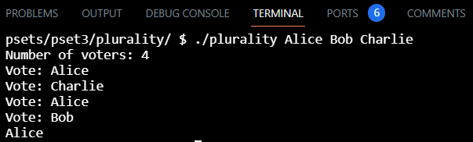runoff.c
In an instant runoff election, voters can rank as many candidates as they wish. If any candidate has a majority (more than 50%) of the first preference votes, that candidate is declared the winner of the election.
If no candidate has more than 50% of the vote, then an “instant runoff” occurs. The candidate who received the fewest number of votes is eliminated from the election, and anyone who originally chose that candidate as their first preference now has their second preference considered. Why do it this way? Effectively, this simulates what would have happened if the least popular candidate had not been in the election to begin with.
The process repeats: if no candidate has a majority of the votes, the last place candidate is eliminated, and anyone who voted for them will instead vote for their next preference (who hasn’t themselves already been eliminated). Once a candidate has a majority, that candidate is declared the winner.
One possibility is that there’s a tie for who should get eliminated. We can handle that scenario by saying all candidates who are tied for last place will be eliminated. If every remaining candidate has the exact same number of votes, though, eliminating the tied last place candidates means eliminating everyone! So in that case, we’ll have to be careful not to eliminate everyone, and just declare the election a tie between all remaining candidates.
#include <cs50.h>
#include <stdio.h>
#include <string.h>
// Max voters and candidates
#define MAX_VOTERS 100
#define MAX_CANDIDATES 9
// preferences[i][j] is jth preference for voter i
int preferences[MAX_VOTERS][MAX_CANDIDATES];
// Candidates have name, vote count, eliminated status
typedef struct
{
string name;
int votes;
bool eliminated;
}
candidate;
// Array of candidates
candidate candidates[MAX_CANDIDATES];
// Numbers of voters and candidates
int voter_count;
int candidate_count;
// Function prototypes
bool vote(int voter, int rank, string name);
void tabulate(void);
bool print_winner(void);
int find_min(void);
bool is_tie(int min);
void eliminate(int min);
int main(int argc, string argv[])
{
// Check for invalid usage
if (argc < 2)
{
printf("Usage: runoff [candidate ...]n");
return 1;
}
// Populate array of candidates
candidate_count = argc - 1;
if (candidate_count > MAX_CANDIDATES)
{
printf("Maximum number of candidates is %in", MAX_CANDIDATES);
return 2;
}
for (int i = 0; i < candidate_count; i++)
{
candidates[i].name = argv[i + 1];
candidates[i].votes = 0;
candidates[i].eliminated = false;
}
voter_count = get_int("Number of voters: ");
if (voter_count > MAX_VOTERS)
{
printf("Maximum number of voters is %in", MAX_VOTERS);
return 3;
}
// Keep querying for votes
for (int i = 0; i < voter_count; i++)
{
// Query for each rank
for (int j = 0; j < candidate_count; j++)
{
string name = get_string("Rank %i: ", j + 1);
// Record vote, unless it's invalid
if (!vote(i, j, name))
{
printf("Invalid vote.n");
return 4;
}
}
printf("n");
}
// Keep holding runoffs until winner exists
while (true)
{
// Calculate votes given remaining candidates
tabulate();
// Check if election has been won
bool won = print_winner();
if (won)
{
break;
}
// Eliminate last-place candidates
int min = find_min();
bool tie = is_tie(min);
// If tie, everyone wins
if (tie)
{
for (int i = 0; i < candidate_count; i++)
{
if (!candidates[i].eliminated)
{
printf("%sn", candidates[i].name);
}
}
break;
}
// Eliminate anyone with minimum number of votes
eliminate(min);
// Reset vote counts back to zero
for (int i = 0; i < candidate_count; i++)
{
candidates[i].votes = 0;
}
}
return 0;
}
// Record preference if vote is valid
bool vote(int voter, int rank, string name)
{
// TODO-------------------------------------------------------------------------------------
for (int k = 0; k < candidate_count; k++)
{
if (strcmp(candidates[k].name, name) == 0)
{
preferences[voter][rank] = k;
return true;
}
}
return false;
}
// Tabulate votes for non-eliminated candidates
void tabulate(void)
{
// TODO-------------------------------------------------------------------------------------
for (int l = 0; l < voter_count; l++) // Vote number
{
for (int m = 0; m < candidate_count; m++) // jth preference
{
int k = preferences[l][m];
if (candidates[k].eliminated == false)
{
candidates[k].votes++;
break;
}
}
}
return;
}
// Print the winner of the election, if there is one
bool print_winner(void)
{
// TODO-------------------------------------------------------------------------------------
for (int o = 0; o < candidate_count; o++)
{
if (candidates[o].votes > (voter_count / 2))
{
printf("%sn", candidates[o].name);
return true;
}
}
return false;
}
// Return the minimum number of votes any remaining candidate has
int find_min(void)
{
// TODO-------------------------------------------------------------------------------------
int min_vote = voter_count; // The minimum vote will become less and less therefore it needs to start at the highest
for (int p = 0; p < candidate_count; p++)
{
if (candidates[p].eliminated == false && candidates[p].votes < min_vote)
{
min_vote = candidates[p].votes;
}
}
return min_vote;
}
// Return true if the election is tied between all candidates, false otherwise
bool is_tie(int min)
{
// TODO-------------------------------------------------------------------------------------
int tieCount = 0; // To see how many candidates are tied
int running = 0; // To see how many candidates are still in the runoff
for (int q = 0; q < candidate_count; q++)
{
if (candidates[q].eliminated == false && candidates[q].votes == min)
{
tieCount++;
running++;
}
else if (candidates[q].eliminated == false)
{
running++;
}
}
if (tieCount == running) // If ALL candidates still in the runoff have the same amount of votes, they are tied
{
return true;
}
return false;
}
// Eliminate the candidate (or candidates) in last place
void eliminate(int min)
{
// TODO-------------------------------------------------------------------------------------
for (int r = 0; r < candidate_count; r++)
{
if (candidates[r].eliminated == false && candidates[r].votes == min)
{
candidates[r].eliminated = true;
}
}
return;
}
Output
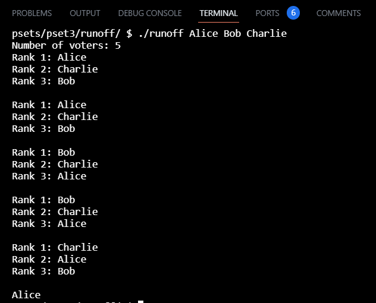filterLess.c
One common filter is the “grayscale” filter, where we take an image and want to convert it to black-and-white.
Most image editing programs support a “sepia” filter, which gives images an old-timey feel by making the whole image look a bit reddish-brown. An image can be converted to sepia by taking each pixel, and computing new red, green, and blue values based on the original values of the three.
Some filters might also move pixels around. Reflecting an image, for example, is a filter where the resulting image is what you would get by placing the original image in front of a mirror. So any pixels on the left side of the image should end up on the right, and vice versa.
There are a number of ways to create the effect of blurring or softening an image. For this problem, we’ll use the “box blur,” which works by taking each pixel and, for each color value, giving it a new value by averaging the color values of neighboring pixels.
#include <getopt.h>
#include <stdio.h>
#include <stdlib.h>
#include "helpers.h"
int main(int argc, char *argv[])
{
// Define allowable filters
char *filters = "bgrs";
// Get filter flag and check validity
char filter = getopt(argc, argv, filters);
if (filter == '?')
{
fprintf(stderr, "Invalid filter.n");
return 1;
}
// Ensure only one filter
if (getopt(argc, argv, filters) != -1)
{
fprintf(stderr, "Only one filter allowed.n");
return 2;
}
// Ensure proper usage
if (argc != optind + 2)
{
fprintf(stderr, "Usage: filter [flag] infile outfilen");
return 3;
}
// Remember filenames
char *infile = argv[optind];
char *outfile = argv[optind + 1];
// Open input file
FILE *inptr = fopen(infile, "r");
if (inptr == NULL)
{
fprintf(stderr, "Could not open %s.n", infile);
return 4;
}
// Open output file
FILE *outptr = fopen(outfile, "w");
if (outptr == NULL)
{
fclose(inptr);
fprintf(stderr, "Could not create %s.n", outfile);
return 5;
}
// Read infile's BITMAPFILEHEADER
BITMAPFILEHEADER bf;
fread(&bf, sizeof(BITMAPFILEHEADER), 1, inptr);
// Read infile's BITMAPINFOHEADER
BITMAPINFOHEADER bi;
fread(&bi, sizeof(BITMAPINFOHEADER), 1, inptr);
// Ensure infile is (likely) a 24-bit uncompressed BMP 4.0
if (bf.bfType != 0x4d42 || bf.bfOffBits != 54 || bi.biSize != 40 ||
bi.biBitCount != 24 || bi.biCompression != 0)
{
fclose(outptr);
fclose(inptr);
fprintf(stderr, "Unsupported file format.n");
return 6;
}
int height = abs(bi.biHeight);
int width = bi.biWidth;
// Allocate memory for image
RGBTRIPLE(*image)[width] = calloc(height, width * sizeof(RGBTRIPLE));
if (image == NULL)
{
fprintf(stderr, "Not enough memory to store image.n");
fclose(outptr);
fclose(inptr);
return 7;
}
// Determine padding for scanlines
int padding = (4 - (width * sizeof(RGBTRIPLE)) % 4) % 4;
// Iterate over infile's scanlines
for (int i = 0; i < height; i++)
{
// Read row into pixel array
fread(image[i], sizeof(RGBTRIPLE), width, inptr);
// Skip over padding
fseek(inptr, padding, SEEK_CUR);
}
// Filter image
switch (filter)
{
// Blur
case 'b':
blur(height, width, image);
break;
// Grayscale
case 'g':
grayscale(height, width, image);
break;
// Reflection
case 'r':
reflect(height, width, image);
break;
// Sepia
case 's':
sepia(height, width, image);
break;
}
// Write outfile's BITMAPFILEHEADER
fwrite(&bf, sizeof(BITMAPFILEHEADER), 1, outptr);
// Write outfile's BITMAPINFOHEADER
fwrite(&bi, sizeof(BITMAPINFOHEADER), 1, outptr);
// Write new pixels to outfile
for (int i = 0; i < height; i++)
{
// Write row to outfile
fwrite(image[i], sizeof(RGBTRIPLE), width, outptr);
// Write padding at end of row
for (int k = 0; k < padding; k++)
{
fputc(0x00, outptr);
}
}
// Free memory for image
free(image);
// Close infile
fclose(inptr);
// Close outfile
fclose(outptr);
return 0;
}
Code
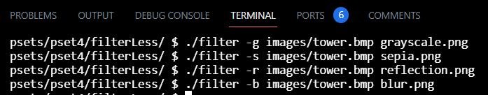Original image

Grayscale filter
Sepia filter

Reflection filter

Blur filter

filter.c
One common filter is the “grayscale” filter, where we take an image and want to convert it to black-and-white.
Some filters might also move pixels around. Reflecting an image, for example, is a filter where the resulting image is what you would get by placing the original image in front of a mirror. So any pixels on the left side of the image should end up on the right, and vice versa.
There are a number of ways to create the effect of blurring or softening an image. For this problem, we’ll use the “box blur,” which works by taking each pixel and, for each color value, giving it a new value by averaging the color values of neighboring pixels.
In artificial intelligence algorithms for image processing, it is often useful to detect edges in an image: lines in the image that create a boundary between one object and another. One way to achieve this effect is by applying the Sobel operator to the image.
#include <getopt.h>
#include <stdio.h>
#include <stdlib.h>
#include "helpers.h"
int main(int argc, char *argv[])
{
// Define allowable filters
char *filters = "begr";
// Get filter flag and check validity
char filter = getopt(argc, argv, filters);
if (filter == '?')
{
fprintf(stderr, "Invalid filter.n");
return 1;
}
// Ensure only one filter
if (getopt(argc, argv, filters) != -1)
{
fprintf(stderr, "Only one filter allowed.n");
return 2;
}
// Ensure proper usage
if (argc != optind + 2)
{
fprintf(stderr, "Usage: filter [flag] infile outfilen");
return 3;
}
// Remember filenames
char *infile = argv[optind];
char *outfile = argv[optind + 1];
// Open input file
FILE *inptr = fopen(infile, "r");
if (inptr == NULL)
{
fprintf(stderr, "Could not open %s.n", infile);
return 4;
}
// Open output file
FILE *outptr = fopen(outfile, "w");
if (outptr == NULL)
{
fclose(inptr);
fprintf(stderr, "Could not create %s.n", outfile);
return 5;
}
// Read infile's BITMAPFILEHEADER
BITMAPFILEHEADER bf;
fread(&bf, sizeof(BITMAPFILEHEADER), 1, inptr);
// Read infile's BITMAPINFOHEADER
BITMAPINFOHEADER bi;
fread(&bi, sizeof(BITMAPINFOHEADER), 1, inptr);
// Ensure infile is (likely) a 24-bit uncompressed BMP 4.0
if (bf.bfType != 0x4d42 || bf.bfOffBits != 54 || bi.biSize != 40 ||
bi.biBitCount != 24 || bi.biCompression != 0)
{
fclose(outptr);
fclose(inptr);
fprintf(stderr, "Unsupported file format.n");
return 6;
}
int height = abs(bi.biHeight);
int width = bi.biWidth;
// Allocate memory for image
RGBTRIPLE(*image)[width] = calloc(height, width * sizeof(RGBTRIPLE));
if (image == NULL)
{
fprintf(stderr, "Not enough memory to store image.n");
fclose(outptr);
fclose(inptr);
return 7;
}
// Determine padding for scanlines
int padding = (4 - (width * sizeof(RGBTRIPLE)) % 4) % 4;
// Iterate over infile's scanlines
for (int i = 0; i < height; i++)
{
// Read row into pixel array
fread(image[i], sizeof(RGBTRIPLE), width, inptr);
// Skip over padding
fseek(inptr, padding, SEEK_CUR);
}
// Filter image
switch (filter)
{
// Blur
case 'b':
blur(height, width, image);
break;
// Edges
case 'e':
edges(height, width, image);
break;
// Grayscale
case 'g':
grayscale(height, width, image);
break;
// Reflect
case 'r':
reflect(height, width, image);
break;
}
// Write outfile's BITMAPFILEHEADER
fwrite(&bf, sizeof(BITMAPFILEHEADER), 1, outptr);
// Write outfile's BITMAPINFOHEADER
fwrite(&bi, sizeof(BITMAPINFOHEADER), 1, outptr);
// Write new pixels to outfile
for (int i = 0; i < height; i++)
{
// Write row to outfile
fwrite(image[i], sizeof(RGBTRIPLE), width, outptr);
// Write padding at end of row
for (int k = 0; k < padding; k++)
{
fputc(0x00, outptr);
}
}
// Free memory for image
free(image);
// Close infile
fclose(inptr);
// Close outfile
fclose(outptr);
return 0;
}
Code
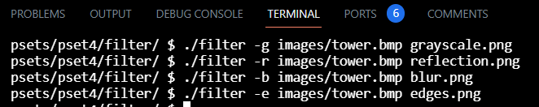Original image
Grayscale filter
Reflection filter
Blur filter
Edges filter

recover.c
Now, I only have one memory card, but there are a lot of you! And so I’ve gone ahead and created a “forensic image” of the card, storing its contents, byte after byte, in a file called card.raw.
So that you don’t waste time iterating over millions of 0s unnecessarily, I’ve only imaged the first few megabytes of the memory card. But you should ultimately find that the image contains 50 JPEGs.
Implement a program that recovers JPEGs from a forensic image
#include <stdio.h>
#include <stdlib.h>
#include <stdint.h>
int main(int argc, char *argv[])
{
// If more than one or less than one argument, return 1
if (argc != 2)
{
printf("One command-line argument neededn");
return 1;
}
// r stands for "read mode"
FILE *input = fopen(argv[1], "r");
// If it cannot be opened, return 1
if (input == NULL)
{
return 1;
}
//Create new type
typedef uint8_t BYTE;
int block = 512;
int count = 0;
FILE *img = NULL;
char filename[8];
//Read first 4 bytes
BYTE buffer[block];
//fread(data, size, number, inptr)
// data: pointer to where to store data you're reading
// size: size of each element to read
// number: number of elements to read
// inptr: FILE * to read from
// If an error occurs, or the end of the file is reached, the return value is a short item count (or zero)
while (fread(&buffer, sizeof(block), 1, input) != 0)
{
// If start of a JPEG
if ((buffer[0] == 0xff) && (buffer[1] == 0xd8) && (buffer[2] == 0xff) && ((buffer[3] & 0xf0) == 0xe0))
{
// If there has already been found a file
if (count > 0)
{
fclose(img);
}
//create new jpeg file
sprintf(filename, "i.jpg", count);
//open new jpeg file
// w stands for "writing"
img = fopen(filename, "w");
//write on the new jpeg file
// remember to use &buffer and not filename
fwrite(&buffer, sizeof(block), 1, img);
count++;
}
// If already found a JPEG, keep writing
// if img has data written, then there must have been found something
else if (img != NULL)
{
// remember to use &buffer and not filename
fwrite(&buffer, sizeof(block), 1, img);
}
}
fclose(img);
fclose(input);
}
Output
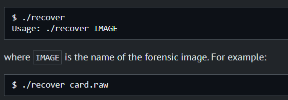speller.c
The challenge ahead of you is to implement the fastest spell checker you can! By “fastest,” though, we’re talking actual “wall-clock,” not asymptotic, time.
In speller.c, we’ve put together a program that’s designed to spell-check a file after loading a dictionary of words from disk into memory.
That dictionary, meanwhile, is implemented in a file called dictionary.c. (It could just be implemented in speller.c, but as programs get more complex, it’s often convenient to break them into multiple files.)
The prototypes for the functions therein, meanwhile, are defined not in dictionary.c itself but in dictionary.h instead. That way, both speller.c and dictionary.c can #include the file.
Unfortunately, we didn’t quite get around to implementing the loading part. Or the checking part. Both (and a bit more) we leave to you!
Alright, the challenge now before you is to implement, in order, load, hash, size, check, and unload as efficiently as possible using a hash table in such a way that TIME IN load, TIME IN check, TIME IN size, and TIME IN unload are all minimized.
// Implements a dictionary's functionality
#include <ctype.h>
#include <stdbool.h>
#include <stdio.h>
#include <string.h>
#include <strings.h>
#include <stdlib.h>
#include "dictionary.h"
// Represents a node in a hash table
typedef struct node
{
char word[LENGTH + 1];
struct node *next;
}
node;
// Make a counter for size function
int sizecount = 0;
// TODO: Choose number of buckets in hash table ---------------------------------------------------------------------------------------- NUMBER
const unsigned int N = 10000;
// Hash table
node *table[N];
// Returns true if word is in dictionary, else false
bool check(const char *word)
{
// TODO ---------------------------------------------------------------------------------------------------------------------------- CHECK
// Hash word to obtain a hash value
int hVal = hash(word);
if (table[hVal] == NULL)
{
return false;
}
// Access linked list at that index/value in the hash table
// Traverse (go through) linked list, looking for the word (strcasecmp)
for (node *tmp = table[hVal]; tmp != NULL; tmp = tmp->next)
{
if (strcasecmp(word, tmp->word) == 0)
{
return true;
}
}
return false;
}
// Hashes word to a number
unsigned int hash(const char *word)
{
// TODO: Improve this hash function ------------------------------------------------------------------------------------------------ HASH
char *w = malloc(LENGTH + 1);
strcpy(w, word);
for (int i = 0; i < strlen(w); i++)
{
// returns 0 if it is not lower
// If it is alphabetical and not lowercase
if (isalpha(w[i]) != 0 && islower(w[i]) == 0)
{
w[i] = tolower(w[i]);
}
}
// Source of hash function: https://stackoverflow.com/questions/14409466/simple-hash-functions
// sdbm
int value = 0;
for (int i = 0; w[i] != ''; i++)
{
value = w[i] + (value << 6) + (value << 16) - value;
}
free(w);
//Input: word with alphabetical characters and (possibly) '
//Output: number between 0 and N - 1
return (value % N);
}
// Loads dictionary into memory, returning true if successful, else false
bool load(const char *dictionary)
{
// TODO ---------------------------------------------------------------------------------------------------------------------------- LOAD
// Open dictionary file --------------------------------------------------------------
FILE *dict = fopen(dictionary, "r");
if (dict == NULL)
{
printf("Could not open file.n");
return false;
}
// Read strings from file one at a time ----------------------------------------------
char buffer[LENGTH + 1];
while (fscanf(dict, "%s", buffer) != EOF)
{
sizecount++;
// Create a new node for each word -----------------------------------------------
//Allocate space in memory for the new node
node *n = malloc(sizeof(node));
if (n == NULL)
{
return false;
}
//Copy word into the node and make sure there's no trash
strcpy(n->word, buffer);
n->next = NULL;
// Hash word to obtain a hash value ----------------------------------------------
int hValue = hash(n->word);
// Insert node into hash table at that location ----------------------------------
n->next = table[hValue];
table[hValue] = n;
}
fclose(dict);
return true;
}
// Returns number of words in dictionary if loaded, else 0 if not yet loaded
unsigned int size(void)
{
// TODO ---------------------------------------------------------------------------------------------------------------------------- SIZE
if (sizecount > 0)
{
return sizecount;
}
else
{
return 0;
}
}
// Unloads dictionary from memory, returning true if successful, else false
bool unload(void)
{
// TODO ---------------------------------------------------------------------------------------------------------------------------- UNLOAD
for (int i = 0; i < N; i++)
{
node *tmp = table[i];
while (tmp != NULL)
{
node *cursor = tmp->next;
free(tmp);
tmp = cursor;
}
}
return true;
}
Output
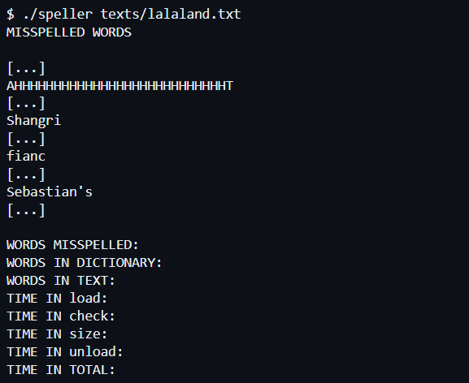Python
mario.py
Write, in a file called mario.py, a program that recreates the half-pyramid using hashes (#) for blocks, exactly as you did in Problem Set 1, except that your program this time should be written in Python.
To make things more interesting, first prompt the user with get_int for the half-pyramid’s height, a positive integer between 1 and 8, inclusive.
If the user fails to provide a positive integer no greater than 8, you should re-prompt for the same again.
Then, generate (with the help of print and one or more loops) the desired half-pyramid.
Take care to align the bottom-left corner of your half-pyramid with the left-hand edge of your terminal window.
# Import get_string if needed, else use input
from cs50 import get_int
def main():
# Get height by using get_height function
height = get_height()
# Print rows
for i in range(height):
# Print columns
# Print space before the pyramid
for j in range(height - i - 1):
# end="" means that there shouldn't be a new line
print(" ", end="")
# Create blocks
# As the amount of blocks should increase, we increase with i + 1
for k in range(i + 1):
print("#", end="")
# Print new line
print()
# Get height function
def get_height():
# Forever loop
while True:
# Get height from user
height = get_int("Height: ")
# If height is more than 0 and max 8, break out of loop and return height
if height > 0 and height < 9:
break
return height
# Call the main function to start the program after all functions has been read
main()
Output
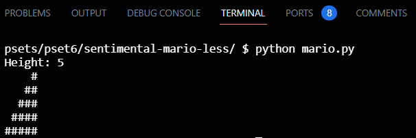marioMore.py
Write, in a file called mario.py, a program that recreates these half-pyramids using hashes (#) for blocks, exactly as you did in Problem Set 1, except that your program this time should be written in Python.
To make things more interesting, first prompt the user with get_int for the half-pyramid’s height, a positive integer between 1 and 8, inclusive. (The height of the half-pyramids pictured above happens to be 4, the width of each half-pyramid 4, with a gap of size 2 separating them).
If the user fails to provide a positive integer no greater than 8, you should re-prompt for the same again.
Then, generate (with the help of print and one or more loops) the desired half-pyramids.
Take care to align the bottom-left corner of your pyramid with the left-hand edge of your terminal window, and ensure that there are two spaces between the two pyramids, and that there are no additional spaces after the last set of hashes on each row.
# Import get_string if needed, else use input
from cs50 import get_int
def main():
# Get height by using get_height function
height = get_height()
# Print rows
for i in range(height):
# Print columns
# Print space before the pyramid
for j in range(height - i - 1):
# end="" means that there shouldn't be a new line
print(" ", end="")
# Create blocks
# As the amount of blocks should increase, we increase with i + 1
for k in range(i + 1):
print("#", end="")
# Create space between pyramids
print(" ", end="")
# Create blocks for second pyramid
for m in range(i + 1):
print("#", end="")
# Print new line
print()
# Get height function
def get_height():
# Forever loop
while True:
# Get height from user
height = get_int("Height: ")
# If height is more than 0 and max 8, break out of loop and return height
if height > 0 and height < 9:
break
return height
# Call the main function to start the program after all functions has been read
main()
Output
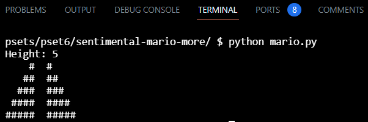cash.py
Write, in a file called cash.py, a program that first asks the user how much change is owed and then spits out the minimum number of coins with which said change can be made. You can do this exactly as you did in Problem Set 1, except that your program this time should be written in Python, and you should assume that the user will input their change in dollars (e.g., 0.50 dollars instead of 50 cents).
Use get_float from the CS50 Library to get the user’s input and print to output your answer. Assume that the only coins available are quarters (25¢), dimes (10¢), nickels (5¢), and pennies (1¢).
We ask that you use get_float so that you can handle dollars and cents, albeit sans dollar sign. In other words, if some customer is owed $9.75 (as in the case where a newspaper costs 25¢ but the customer pays with a $10 bill), assume that your program’s input will be 9.75 and not $9.75 or 975. However, if some customer is owed $9 exactly, assume that your program’s input will be 9.00 or just 9 but, again, not $9 or 900. Of course, by nature of floating-point values, your program will likely work with inputs like 9.0 and 9.000 as well; you need not worry about checking whether the user’s input is “formatted” like money should be.
If the user fails to provide a non-negative value, your program should re-prompt the user for a valid amount again and again until the user complies.
Incidentally, so that we can automate some tests of your code, we ask that your program’s last line of output be only the minimum number of coins possible: an integer followed by a newline.
from cs50 import get_float
def main():
# Ask how many cents the customer is owed
cents = get_cents()
# Calculate the number of quarters to give the customer
quarters = calculate_quarters(cents)
cents = cents - quarters * 25
# Calculate the number of dimes to give the customer
dimes = calculate_dimes(cents)
cents = cents - dimes * 10
# Calculate the number of nickels to give the customer
nickels = calculate_nickels(cents)
cents = cents - nickels * 5
# Calculate the number of pennies to give the customer
pennies = calculate_pennies(cents)
cents = cents - pennies * 1
# Sum coins
coins = quarters + dimes + nickels + pennies
# Print total number of coins to give the customer
print(coins)
def get_cents():
# TODO
cents = -1
# Ask until change is more than 0
while (cents <= 0):
cents = get_float("Change: $")
# Make the dollars to cents
cents *= 100
return cents
def calculate_quarters(cents):
# TODO
quarters = 0
# While there's enough cents for the coin, add one coin and remove the amount from the cents
while (cents >= 25):
quarters += 1
cents -= 25
return quarters
def calculate_dimes(cents):
# TODO
dimes = 0
# While there's enough cents for the coin, add one coin and remove the amount from the cents
while (cents >= 10):
dimes += 1
cents -= 10
return dimes
def calculate_nickels(cents):
# TODO
nickels = 0
# While there's enough cents for the coin, add one coin and remove the amount from the cents
while (cents >= 5):
nickels += 1
cents -= 5
return nickels
def calculate_pennies(cents):
# TODO
pennies = 0
# While there's enough cents for the coin, add one coin and remove the amount from the cents
while (cents >= 1):
pennies += 1
cents -= 1
return pennies
main()
Output
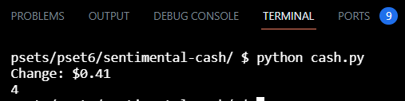credit.py
In credit.py, write a program that prompts the user for a credit card number and then reports (via print) whether it is a valid American Express, MasterCard, or Visa card number, exactly as you did in Problem Set 1, except that your program this time should be written in Python.
So that we can automate some tests of your code, we ask that your program’s last line of output be AMEX\n or MASTERCARD\n or VISA\n or INVALID\n, nothing more, nothing less.
For simplicity, you may assume that the user’s input will be entirely numeric (i.e., devoid of hyphens, as might be printed on an actual card).
Best to use get_int or get_string from CS50’s library to get users’ input, depending on how you to decide to implement this one.
from cs50 import get_string
# MASTERCARD: 16-Digit #'s, Start with: 51, 52, 53, 54, or 55
# VISA: 13-16-Digit #'s, Start with: 4
# AMEX: 15-Digit #'s, Star with: 34 or 37
# Luhn's Algorithm:
# 1. Multiply every other digit by 2, starting with the second number to the last
# 2. Add the sum of those digits
# 3. Add the sum of the other digits
# 4. If the total sum ends with a 0, it is valid!
def main():
# -----Promt user for credit card number
ccn = get_string("Number: ")
# -----Check length
count = len(ccn)
# -----Check if the length is valid
if (count != 13 and count != 15 and count != 16):
print("INVALID")
return 0
# -----Calculate checksum
checksum = 0
# Use function check to find the checksum
checksum = Check(count, ccn, checksum)
csEnd = checksum % 10
if (csEnd != 0):
print("INVALID")
return 0
# -----Find start number with two digits
start = int(ccn)
for j in range(count - 2):
start /= 10
start = int(start)
# Check if it's American Express:
if (count == 15 and (start == 34 or start == 37)):
print("AMEX")
# Check if it's MasterCard:
elif (count == 16 and (start == 51 or start == 52 or start == 53 or start == 54 or start == 55)):
print("MASTERCARD")
# Check if it's VISA:
elif ((count == 13 or count == 16) and (int(start / 10) == 4)):
print("VISA")
# INVALID
else:
print("INVALID")
def Check(count, ccn, checksum):
# Case 1 (Multiply every other digit by 2)
ccn = int(ccn)
for i in range(1, count + 1, 1):
digit = int(ccn) % 10
# Case 1 (Multiply every other digit by 2 and add to checksum)
if (i % 2 == 0):
dd = digit * 2
if (dd >= 10):
checksum += dd % 10
checksum += int(dd / 10)
else:
checksum += digit * 2
# case 2 (add the other digits to checksum)
else:
checksum += digit
ccn /= 10
return checksum
main()
Output
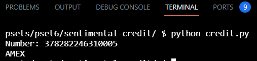readability.py
Write, in a file called readability.py, a program that first asks the user to type in some text, and then outputs the grade level for the text, according to the Coleman-Liau formula, exactly as you did in Problem Set 2, except that your program this time should be written in Python.
Recall that the Coleman-Liau index is computed as 0.0588 * L - 0.296 * S - 15.8, where L is the average number of letters per 100 words in the text, and S is the average number of sentences per 100 words in the text.
Use get_string from the CS50 Library to get the user’s input, and print to output your answer.
Your program should count the number of letters, words, and sentences in the text. You may assume that a letter is any lowercase character from a to z or any uppercase character from A to Z, any sequence of characters separated by spaces should count as a word, and that any occurrence of a period, exclamation point, or question mark indicates the end of a sentence.
Your program should print as output "Grade X" where X is the grade level computed by the Coleman-Liau formula, rounded to the nearest integer.
If the resulting index number is 16 or higher (equivalent to or greater than a senior undergraduate reading level), your program should output "Grade 16+" instead of giving the exact index number. If the index number is less than 1, your program should output "Before Grade 1".
from cs50 import get_string
# Get text from user
text = get_string("Text: ")
# Calculate length of string/text
length = len(text)
# Letter count, word count, sentence count
lcount = 0
wcount = 0
scount = 0
for i in range(length):
# Count letters
num = ord(text[i])
if ((num >= 65 and num <= 90) or (num >= 97 and num <= 122)):
lcount += 1
# Count words
elif (num == 32):
wcount += 1
# Count sentences
elif (text[i] == '.' or text[i] == '!' or text[i] == '?'):
scount += 1
# Count the last word
elif (text[i] == ''):
wcount += 1
wcount += 1
# Calculate average number of letters per 100 words
avgl = lcount / wcount * 100
# Calculate average number of sentences per 100 words
avgs = scount / wcount * 100
# Calculate Coleman-Liau Index
index = round(0.0588 * avgl - 0.296 * avgs - 15.8)
# If greater than grade 16
if (index > 16):
print("Grade 16+")
# If less than grade 1
elif (index < 1):
print("Before Grade 1")
# If grade is between 1 and 16
else:
print(f"Grade {index}")
Output
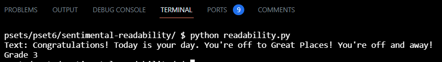dna.py
In a file called dna.py, implement a program that identifies to whom a sequence of DNA belongs.
The program should require as its first command-line argument the name of a CSV file containing the STR counts for a list of individuals and should require as its second command-line argument the name of a text file containing the DNA sequence to identify.
If your program is executed with the incorrect number of command-line arguments, your program should print an error message of your choice (with print). If the correct number of arguments are provided, you may assume that the first argument is indeed the filename of a valid CSV file and that the second argument is the filename of a valid text file.
Your program should open the CSV file and read its contents into memory.
Your program should open the DNA sequence and read its contents into memory.
For each of the STRs (from the first line of the CSV file), your program should compute the longest run of consecutive repeats of the STR in the DNA sequence to identify. Notice that we’ve defined a helper function for you, longest_match, which will do just that!
If the STR counts match exactly with any of the individuals in the CSV file, your program should print out the name of the matching individual.
If the STR counts do not match exactly with any of the individuals in the CSV file, your program should print No match.
import csv
import sys
def main():
# TODO: Check for command-line usage
if len(sys.argv) != 3:
sys.exit("Usage: python dna.py data.csv sequence.txt")
# TODO: Read database file into a variable
# Make a list of dictionaries
database = []
# Open csv file
with open(sys.argv[1], "r") as f:
reader = csv.DictReader(f)
# Copy file into database
for name in reader:
database.append(name)
# TODO: Read DNA sequence file into a variable
# Open text file
with open(sys.argv[2], "r") as f:
# Copy text into variable
DNA = f.read()
# TODO: Find longest match of each STR in DNA sequence
# Make a dictionary for all the different STR's
matches = {}
# For every STR in the database (therefore not 'name')
for key in database[0]:
if (key != 'name'):
# subsequence is equal each STR
subsequence = key
# Find the longest match of each STR in the person's DNA
match = longest_match(DNA, subsequence)
# Add each STR and their longest match to dictionary
matches[key] = match
# TODO: Check database for matching profiles
# For every person in the database
for i in range(len(database)):
matchingSTR = 0
# Every STR for that person
for key, value in database[i].items():
# Every matching STR for that person (therefore not 'name')
if (key != 'name'):
for k, v in matches.items():
# If both the STR name and the longest match value are the same
if (int(value) == int(v) and key == k):
# Add one to the total amount of matches
matchingSTR += 1
# If every STR has a match with the same person,
# the amount of matches will be equal the amount of different STR sequences
if (matchingSTR == len(matches)):
print(database[i]['name'])
return
# If not found after going through the whole database
print("No match")
return
def longest_match(sequence, subsequence):
"""Returns length of longest run of subsequence in sequence."""
# Initialize variables
longest_run = 0
subsequence_length = len(subsequence)
sequence_length = len(sequence)
# Check each character in sequence for most consecutive runs of subsequence
for i in range(sequence_length):
# Initialize count of consecutive runs
count = 0
# Check for a subsequence match in a "substring" (a subset of characters) within sequence
# If a match, move substring to next potential match in sequence
# Continue moving substring and checking for matches until out of consecutive matches
while True:
# Adjust substring start and end
start = i + count * subsequence_length
end = start + subsequence_length
# If there is a match in the substring
if sequence[start:end] == subsequence:
count += 1
# If there is no match in the substring
else:
break
# Update most consecutive matches found
longest_run = max(longest_run, count)
# After checking for runs at each character in seqeuence, return longest run found
return longest_run
main()
Output
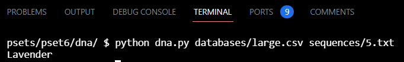Flask/Python website
For my final project in the CS50 course I had to create a website using Flask, Python, HTML, CSS, and JavaScript.
Link to GitHub repository Introduction video to my websiteSQL
movies database
-- In 1.sql, write a SQL query to list the titles of all movies released in 2008.
-- Your query should output a table with a single column for the title of each movie.
SELECT title
FROM movies
WHERE year = 2008;
-- In 2.sql, write a SQL query to determine the birth year of Emma Stone.
-- Your query should output a table with a single column and a single row (not including the header) containing Emma Stone’s birth year.
-- You may assume that there is only one person in the database with the name Emma Stone.
SELECT birth
FROM people
WHERE name = "Emma Stone";
-- In 3.sql, write a SQL query to list the titles of all movies with a release date on or after 2018, in alphabetical order.
-- Your query should output a table with a single column for the title of each movie.
-- Movies released in 2018 should be included, as should movies with release dates in the future.
SELECT title
FROM movies
WHERE year >= 2018
ORDER BY title;
-- In 4.sql, write a SQL query to determine the number of movies with an IMDb rating of 10.0.
-- Your query should output a table with a single column and a single row (not including the header) containing the number of movies with a 10.0 rating.
SELECT COUNT(title)
FROM movies
JOIN ratings
ON ratings.movie_id = movies.id
WHERE ratings.rating = 10.0;
-- In 5.sql, write a SQL query to list the titles and release years of all Harry Potter movies, in chronological order.
-- Your query should output a table with two columns, one for the title of each movie and one for the release year of each movie.
-- You may assume that the title of all Harry Potter movies will begin with the words “Harry Potter”, and that if a movie title begins with the words “Harry Potter”, it is a Harry Potter movie.
-- The percentage sign on the right means 0 or more characters on the right of the words
SELECT year, title
FROM movies
WHERE title LIKE "Harry Potter%"
ORDER BY year;
-- In 6.sql, write a SQL query to determine the average rating of all movies released in 2012.
-- Your query should output a table with a single column and a single row (not including the header) containing the average rating.
SELECT AVG(rating)
FROM ratings
JOIN movies ON movies.id = ratings.movie_id
WHERE movies.year = 2012;
-- In 7.sql, write a SQL query to list all movies released in 2010 and their ratings, in descending order by rating. For movies with the same rating, order them alphabetically by title.
-- Your query should output a table with two columns, one for the title of each movie and one for the rating of each movie.
-- Movies that do not have ratings should not be included in the result.
SELECT ratings.rating, movies.title
FROM movies
JOIN ratings
ON ratings.movie_id = movies.id
WHERE movies.year = 2010
ORDER BY rating DESC, title ASC;
-- In 8.sql, write a SQL query to list the names of all people who starred in Toy Story.
-- Your query should output a table with a single column for the name of each person.
-- You may assume that there is only one movie in the database with the title Toy Story.
SELECT name
FROM people
JOIN stars
ON stars.person_id = people.id
JOIN movies
ON stars.movie_id = movies.id
WHERE movies.title = "Toy Story";
-- In 9.sql, write a SQL query to list the names of all people who starred in a movie released in 2004, ordered by birth year.
-- Your query should output a table with a single column for the name of each person.
-- People with the same birth year may be listed in any order.
-- No need to worry about people who have no birth year listed, so long as those who do have a birth year are listed in order.
-- If a person appeared in more than one movie in 2004, they should only appear in your results once.
SELECT DISTINCT name
FROM people
JOIN stars
ON stars.person_id = people.id
JOIN movies
ON movies.id = stars.movie_id
WHERE movies.year = 2004
ORDER BY people.birth;
-- In 10.sql, write a SQL query to list the names of all people who have directed a movie that received a rating of at least 9.0.
-- Your query should output a table with a single column for the name of each person.
-- If a person directed more than one movie that received a rating of at least 9.0, they should only appear in your results once.
SELECT DISTINCT people.name
FROM people
JOIN directors
ON directors.person_id = people.id
JOIN movies
ON movies.id = directors.movie_id
JOIN ratings
ON ratings.movie_id = movies.id
WHERE rating >= 9.0;
-- In 11.sql, write a SQL query to list the titles of the five highest rated movies (in order) that
-- Chadwick Boseman starred in, starting with the highest rated.
-- Your query should output a table with a single column for the title of each movie.
-- You may assume that there is only one person in the database with the name Chadwick Boseman.
SELECT title
FROM movies
JOIN stars
ON stars.movie_id = movies.id
JOIN people
ON people.id = stars.person_id
JOIN ratings
ON ratings.movie_id = movies.id
WHERE people.name = "Chadwick Boseman"
ORDER BY ratings.rating DESC
LIMIT 5;
-- In 12.sql, write a SQL query to list the titles of all movies in which both Johnny Depp and Helena Bonham Carter starred.
-- Your query should output a table with a single column for the title of each movie.
-- You may assume that there is only one person in the database with the name Johnny Depp.
-- You may assume that there is only one person in the database with the name Helena Bonham Carter.
SELECT movies.title
FROM movies
JOIN stars
ON stars.movie_id = movies.id
JOIN people
ON people.id = stars.person_id
WHERE people.name = "Johnny Depp"
INTERSECT
SELECT movies.title
FROM movies
JOIN stars
ON stars.movie_id = movies.id
JOIN people
ON people.id = stars.person_id
WHERE people.name = "Helena Bonham Carter";
-- In 13.sql, write a SQL query to list the names of all people who starred in a movie
-- in which Kevin Bacon also starred.
-- Your query should output a table with a single column for the name of each person.
-- There may be multiple people named Kevin Bacon in the database.
-- Be sure to only select the Kevin Bacon born in 1958.
-- Kevin Bacon himself should not be included in the resulting list.
SELECT name
FROM people
JOIN stars
ON stars.person_id = people.id
JOIN movies
ON movies.id = stars.movie_id
-- Remember IN instead of =
WHERE movies.title IN
(SELECT movies.title
FROM movies
JOIN stars
ON stars.movie_id = movies.id
JOIN people
ON people.id = stars.person_id
WHERE people.name = "Kevin Bacon"
AND people.birth = 1958)
AND NOT people.name = "Kevin Bacon"
fiftyville
The CS50 Duck has been stolen! The town of Fiftyville has called upon you to solve the mystery of the stolen duck. Authorities believe that the thief stole the duck and then, shortly afterwards, took a flight out of town with the help of an accomplice. Your goal is to identify:
- Who the thief is,
- What city the thief escaped to, and
- Who the thief’s accomplice is who helped them escape
All you know is that the theft took place on July 28, 2021 and that it took place on Humphrey Street.
How will you go about solving this mystery? The Fiftyville authorities have taken some of the town’s records from around the time of the theft and prepared a SQLite database for you, fiftyville.db, which contains tables of data from around the town.
You can query that table using SQL SELECT queries to access the data of interest to you.
Using just the information in the database, your task is to solve the mystery.
-- Keep a log of any SQL queries you execute as you solve the mystery.
-- took place on July 28, 2021 on place on Humphrey Street.
-- Find out more about the crime scene
SELECT description
FROM crime_scene_reports
WHERE year = 2021
AND month = 7
AND day = 28
AND street = "Humphrey Street"
AND description LIKE "%CS50 Duck%";
-- Took place at 10:15am at Humphrey Street Bakery
-- Three interviews that all mentions the bakery
--------------------------------------------------------------------------------------------
-- Learn what the witnesses tell
SELECT name, transcript
FROM interviews
WHERE year = 2021
AND month = 7
AND day = 28
AND transcript LIKE "%bakery%";
-- REMEMBER LIKE AND NOT =
-- Within 10 min of theft: Thief goes to a car in the bakery parking lot
-- Recognize theif from ATM on Leggett Street earlier in the morning
-- Theif was withdrawing money
-- While theif left the bakery, they called someone for less than a minute
-- Said they're planning to take the earliest flight tomorrow
-- Theif asked the other person to purchase the flight ticket
-- Suspicious person talked on the phone for half an hour without buying anything in the bakery
--------------------------------------------------------------------------------------------
SELECT DISTINCT people.name, phone_calls.caller
FROM people
JOIN bakery_security_logs
ON people.license_plate = bakery_security_logs.license_plate
JOIN bank_accounts
ON bank_accounts.person_id = people.id
JOIN phone_calls
ON phone_calls.caller = people.phone_number
-- Check security logs for cars up to 10 minutes after the theft
WHERE bakery_security_logs.year = 2021
AND bakery_security_logs.month = 7
AND bakery_security_logs.day = 28
AND bakery_security_logs.hour = 10
AND bakery_security_logs.minute BETWEEN 15 AND 25
-- Bruce, Diana, Iman, Luca, Barry
-- Find the people who also made a withdrawal on Leggett Street that same day
AND bank_accounts.account_number IN (
SELECT account_number
FROM atm_transactions
WHERE atm_transactions.year = 2021
AND atm_transactions.month = 7
AND atm_transactions.day = 28
AND atm_location = "Leggett Street"
AND transaction_type = "withdraw")
-- Bruce, Diana, Iman, Luca
-- Find those who called someone for under a minute the same day
AND phone_calls.caller IN (
SELECT caller
FROM phone_calls
WHERE phone_calls.year = 2021
AND phone_calls.month = 7
AND phone_calls.day = 28
AND duration <= 60
)
-- Two names left: Bruce and Diana
--------------------------------------------------------------------------------------------
SELECT full_name, abbreviation
FROM airports
WHERE city = "Fiftyville";
-- Only one airport in Fiftyville called Fiftyville Regional Airport or "CSF"
-- Airport ID 8
--------------------------------------------------------------------------------------------
-- Find the earliest flight
SELECT id, hour, minute
FROM flights
WHERE year = 2021
AND month = 7
AND day = 29
AND origin_airport_id = 8;
-- Earliest flight from Fiftyville is flight id 36, destination airport id is 4
--------------------------------------------------------------------------------------------
SELECT DISTINCT people.name
FROM people
JOIN passengers
ON passengers.passport_number = people.passport_number
JOIN flights
ON passengers.flight_id = flights.id
-- Find the flights that originates from Fiftyville
WHERE flights.id = 36
-- Only look for the two names
AND people.name IN ('Bruce', 'Diana');
-- Only Bruce has this flight, not Diana
--------------------------------------------------------------------------------------------
-- Find which city flight 36 goes to when destiation airport id is 4
SELECT DISTINCT city
FROM airports
WHERE id = 4;
-- New York City
--------------------------------------------------------------------------------------------
-- Find accomplice -------------------------------------------------------------
SELECT DISTINCT people.name
FROM people
JOIN phone_calls
ON phone_calls.receiver = people.phone_number
-- Find those who Bruce called that day
WHERE phone_calls.receiver IN (
SELECT receiver
FROM phone_calls
WHERE phone_calls.year = 2021
AND phone_calls.month = 7
AND phone_calls.day = 28
AND duration <= 60
AND caller IN ('(367) 555-5533')) -- Bruce's number
-- Robin is the accomplice